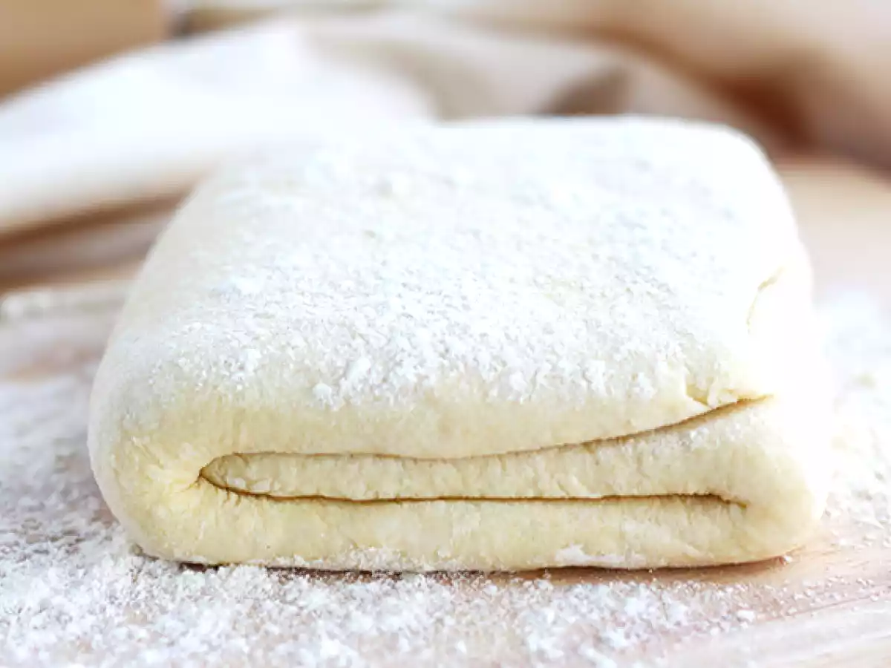

← Volver al módulo 4

Elaboración Hojaldre con Levadura
Masa hojaldrada con levadura, perfecta para preparaciones dulces o saladas.
Ingredientes
- 3 tazas de harina
- 1 cucharilla de levadura instantánea
- 80 gr de azúcar
- 30 gr de manteca
- 1 huevo
- 1 cucharilla de sal
- 400 gr de mantequilla fría sin sal
Preparación
Preparar el mise en place y tamizar la harina.
Hacer el polish con la levadura. Abrir un volcán en la harina y añadir el azúcar, el huevo, el polish y la sal en los bordes, compactando la masa.
Añadir la manteca y envolver con papel film. Dejar reposar.
Sacar la mantequilla fría, colocar entre papel film y aplastar.
Extender la mantequilla con uslero, colocarla sobre la masa y realizar 2 dobletes simples y 2 dobletes dobles.